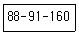

패션머천다이징산업기사 (2015-03-08 기출문제)
1과목: 패션마케팅
1. 손익분기점(break-even-point)의 의미로 가장 옳은 것은?
- 매출이 일어나는 점
- 순이익이 0이 되는 점의 매출액
- 목표이익을 넘어가는 점의 매출액
- 고정비를 넘어가는 점의 매출액
(정답률: 59%)

2. 소비자의 수요의 변화 정도를 나타내는 수요의 가격탄력성이 바르게 표시된 것은?
- 가격탄력성=수요의 변화율(%)/가격의 변화율(%)
- 가격탄력성=가격의 변화율(%)/수요의 변화율(%)
- 가격탄력성=(가격의 변화치-원래가격)/(수요의 변화치-원래수요)
- 가격탄력성=(원래수요-수요의 변화치)/(원래 가격-가격의 변화치)
(정답률: 42%)
3. 다음 중 촉진믹스(promotion mix)활동이 아닌 것은?
- 광고
- 인적판매
- 유형경향 분석
- P.R(Public Relations)
(정답률: 60%)
4. 일반적인 구매의사 결정에 결정적 영향을 미치는 요인이 아닌 것은?
- 스타일
- 가격
- 직업
- 물리적 특성
(정답률: 82%)
5. 리테일 머천다이저의 주요업무로 옳은 것은?
- 상품의 생산
- 생산기술의 개발
- 상품 선정과 사입
- 상품의 디자인
(정답률: 58%)
6. 패션머천다이징의 5R전략에 속하지 않는 것은?
- 적절한 물량(right quantity)
- 적절한 장소( right place)
- 적절한 가격(right price)
- 적절한 판매(right sales)
(정답률: 84%)
7. 머천다이저는 상품기획부분의 총괄자로서 상품계획에서 판매부분에 이르기까지 광범위한 직무 영역을 가지고 있다. 다음 중 머천다이저의 역할로서 가장 거리가 먼 것은?
- 정보분석 업무
- 상품기획 업무
- 판매 및 판매촉진 업무
- 디자인개발 업무
(정답률: 64%)
8. 표적시장을 선정하여 마케팅 활동을 하게 되었을 경우 이점이 아닌 것은?
- 고객의 폭을 넓힐 수 있다.
- 고객을 한층 더 만족시킬 수 있다.
- 마케팅 이념의 실현이 용이하다.
- 자사의 차별적 경쟁 우위 확립이 가능해진다.
(정답률: 54%)
9. 자사 브랜드를 중요한 제품특성이나 소비자 편익과 관련시키는 방법으로, 품질, 가격에 의한 포지셔닝이 대표적인 전략의 유형은?
- 제품속성에 의한 포지셔닝
- 사용상황에 의한 포지셔닝
- 제품사용자에 의한 포지셔닝
- 이미지에 의한 포지셔닝
(정답률: 79%)
10. 프랜차이즈 시스템에 대한 유통경로의 구조로 옳은 것은?
- 기업적 수직적 경로 구조
- 계약형 수직적 경로 구조
- 수형적 경로 구조
- 혼합 경로 구조
(정답률: 알수없음)
11. 패션의 변화속성에 대한 설명 중 틀린 것은?
- 패션은 지속기간이 짧을수록, 변화의 속도가 빠를수록, 시기적 중요성이 적어진다.
- 패션에 있어서 일어나는 단기적이고 소규모 변화는 계절별 변화에서 찾아볼 수 있다.
- 패드(fad)는 단기간에 급격히 소비자수가 증가하는 현상으로 일단 유행이 시작되면 값싼 모조품이 대량 등장한다.
- 유행변화의 유형은 계절별 변화 점진적 변화, 진화적 변화, 혁명적 변화의 4가기 형태로 크게 나뉜다.
(정답률: 91%)
12. 패션 머천다이저의 업무수행타입에 대한 설명으로 틀린 것은?
- 상인형 머천다이저 – 경험과 상거래면에서 인간관계를 중시하는 유형
- 계수관리형 머천다이저 –머천다이저로서의 업적달성을 판매예산, 재고예산 등 수치에 두는 유형
- 전문관리형 머천다이저 – 상품기획에서 매장전개 및 광고에 이르기까지 마케팅 활동을 체계적으로 추진하는 유형
- 고감도형 머천다이저 – 소비자가 원하는 것보다 자신의 창의성을 우선시하는 유형
(정답률: 알수없음)
13. 상표자산(brand equilty)의 가치를 높이는 관리방안으로 다음 중 가장 적합하지 않는 것은?
- 자사 상표의 인지도를 높인다.
- 호의적인 브랜드 이미지를 구축한다.
- 상표확장을 확대한다.
- 경쟁사와 차별화된 이미지를 연상시킨다.
(정답률: 91%)
14. 기존제품을 가지고 잠재 소비자 집단을 확인하여 그들의 욕구를 충족시키고자 하는 마케팅 전략은?
- 시장침투 전략
- 제품개발 전략
- 시장개척 전략
- 다각화 전략
(정답률: 28%)
15. 패션기업이 제품가격을 결정할 때 사용하는 원가기준가격결정법에 대한 설명으로 맞는 것은?
- 의류제품 한 벌 생산 총비용에 일정률의 마진을 더해 판매가를 결정한다.
- 목표이익을 실현하는 매출수준에서 의류제품가격을 결정한다.
- 고객이 지각하는 의류제품의 가치에 맞춰 가격을 결정한다.
- 경쟁제품의 가격을 근거로 하여 자사 의류제품가격을 결정한다..
(정답률: 77%)
16. 다음 중 상품을 구입하도록 하는 디스플레이의 전개수단에 해당되지 않는 것은?
- 색채
- 상품
- 소도구
- 이벤트
(정답률: 82%)
17. 마케팅의 초점인 고객이 같은 대상일 때 다른 업종, 다른 회사끼리도 힘을 합쳐서 공동으로 고객을 공략하는 노력에 해당되는 마케팅은?
- 그린 마케팅
- 통합적 마케팅
- 공존공영 마케팅
- 전사적 마케팅
(정답률: 73%)
18. 시장표적화 전략 중 내의, 양말, 스타킹 등의 편의품에 효과적인 마케팅으로 시장을 세분화하지 않고 전체시장에 대응하는 전략은?
- 비차별화 전략
- 차별화 전략
- 집중화 전략
- 혁신 전략
(정답률: 90%)
19. 패션 유통 경로의 유형 중 대리점주의 상품 선별 능력과 전문 리테일 바이어 기능이 가장 요구되는 유형은?
- 위탁판매제도
- 완사입제도
- 위탁사입제도
- 절충형사입제도
(정답률: 75%)
20. 고객관계관리(CRM)에 대한 설명으로 가장 적합한 것은?
- 고객관계관리는 고객 점유율보다 시장점유율이 중점을 둔다.
- 고객관계관리의 발달 단계는 고객이탈 방지→우수고객유치→잠재고객 활성화→고객가치 증대 순이다.
- 기존의 고객을 유지하기 보다는 다양한 고객을 찾기 위함이다.
- 고객관계관리의 가장 큰 효과는 제품을 판매하기 위함이다.
(정답률: 72%)
2과목: 패션소재기획
21. 다음 중 헤어섬유가 아닌 것은?
- 알파카(alpaca)
- 캐시미어(cashmere)
- 비큐나(vicuna)
- 태피터(taffeta)
(정답률: 50%)
22. 의류업체에서 소재기획 과정의 순서가 옳은 것은?
- 정보수집→이미지 맵→소재 맵→스타일 개발과 소재선정→발주→의류생산
- 정보수집→소재 맵→이미지 맵→스타일 개발과 소재선정→발주→의류생산
- 정보수집→이미지 맵→스타일 개발과 소재선정→소재맵→발주→의류생산
- 정보수집→스타일 개발과 소재선정→이미지 맵→소재맵→발주→의류생산
(정답률: 70%)
23. 면섬유를 가공하여 광택의 증가, 표면의 평활 및 부드러운 촉감, 형태안정성 등으로 기존의 면섬유와 차별화를 준 소재는?
- 친즈(chinz) 소재
- 실켓(silket finishing) 소재
- 샌포라이징(sanforizing) 소재
- 코팅(coating) 소재
(정답률: 75%)
24. 면, 마, 레이온 등의 직물이 제조과정에서 받았던 장력이 이완되어 안정화됨에 따라 수축이 일어나는 것을 미리 압축처리를 하여 수축을 방지하는 가공은?
- 런던 슈렁크(London shrunk)
- 샌포라이징(sanforizing)
- 머서화 가공(mercerization)
- 신징(singeing)
(정답률: 55%)
25. 다음 중 경편성물에 해당하는 것은?
- 펄편
- 파일편
- 라셀
- 고무편
(정답률: 62%)
26. 패션상품 제작을 위한 소재선택 시 용도∙기능과의 적합성으로만 나열한 것은?
- 재질의 기능성∙내구성, 착용성의 쾌적성, 보관성의 용이성
- 염색의 보존성, 재단의 용이성, 품질 안정성
- 시각효과 재질감, 촉각효과 재질감, 봉제의 용이성
- 입체 가공의 견지성, 관리상의 편의성, 원가의 타당성
(정답률: 알수없음)
27. 인조모(artificial wool)에 비유되는 섬유로, 가볍고 따뜻하며 양모와 가장 유사한 합성섬유로 벌크가공을 하여 편성물이나 파일직에 적합한 섬유는?
- 폴리에스테르
- 아세테이트
- 나일론
- 아크릴
(정답률: 알수없음)
28. 부드러운(soft) 소재에 적합하지 않은 감성 용어는?
- 실키(silky)한
- 나플나플한
- 사각사각한
- 드레이프(drape)성이 강한
(정답률: 73%)
29. 기존의 제품들을 시각적으로 분류, 분석하고 새로운 제품의 위치를 구체화시키는데 사용하는 도구는?
- 컬러 맵
- 이미지 맵
- 프로토타입
- 스와치
(정답률: 79%)
30. 빛 바랜 듯한 이미지로 패션성을 나타내는 청바지 데님 소재에 주로 사용하는 염료는?
- 인디고 염료
- 반응성 염료
- 매염 염료
- 분산염료
(정답률: 77%)
31. 유럽을 중심으로 자국의 환경보호와 자국민의 안전을 위해 친환경적 방법에 의해 생산된 제품에 부여하는 마크는?
- 명품 마트
- 골드 다운 마크(Gold down mark)
- 에콜로지 마크(Ecology mark)
- 무포르말린 마크(free form mark)
(정답률: 77%)
32. 친환경적이고 자원 절약적인 제품에 소비자의 선호를 유발하려는 의도에서 독일에서 최초로 제창된 환경마트는?
- 에코 라벨(Eco label)
- 블루 엔젤(blue angel)
- 환경라벨(environmental label)
- 에코 마크(eco mark)
(정답률: 54%)
33. 열과 힘의 작용으로 영구적 변형이 생기는 성질의 섬유가 아닌 것은?
- 트리아세테이트
- 폴리에스테르
- 비스코스 레이온
- 나일론
(정답률: 알수없음)
34. 기본적인 소재기획 개념의 설명으로 가장 거리가 먼 것은?
- 소재를 가장 적절히 사용하기 위한 과정이다.
- 기존에 있는 소재들 중 몇 가지를 선택하고 그 물량과 구성비를 정하는 과정이다.
- 프린트 패턴뿐만 아니라 새로운 소재를 만들어 낸다.
- 순수한 기획과 창의적인 디자인 작업을 포함한다.
(정답률: 60%)
35. 소재형상별 분류와 특징이 틀린 것은?
- 면조 – 텁텁하면서 자연스러운 타입
- 레이온조 – 드레이프성이 좋으면서 품위 있는 광택 타입
- 화섬조 – 인위적인 광택과 차가운 느낌의 타입
- 소모조 – 거칠면서 불규칙한 타입
(정답률: 50%)
36. 다음 둥 실의 성질을 좌우하는 요소로 가장 거리가 먼 것은?
- 실의 길이
- 꼬임의 방향
- 꼬임 수
- 사용 원료
(정답률: 70%)
37. 소재형상별 분류와 특징이 틀린 것은?
- 실크조(silk-line) – 부드러운면서 우아한 광택 타입
- 마조(lineen-like) – 거칠면서 불규칙한 타입
- 화섬조(syntheties-like) – 인위적인 광택과 차가운 느낌의 타입
- 면조(cotton like) – 보송보송하고 따뜻하면서 부풀어진 타입
(정답률: 70%)
38. 직물의 조직에 대한 설명 중 틀린 것은?
- 평직은 경사와 위사의 교차점이 많아 광택이 적다.
- 능직의 대표적인 소재로는 양단, 브로케이드, 다마스크 등이 있다.
- 수자직은 세탁 시 마찰에 약하며 착용성능이 저하될 수 있다.
- 도비조직은 일반 제직기에 간단히 도비 장치를 설치하여 무늬를 만든 조직을 말한다.
(정답률: 46%)
39. 가공처리하여 색이 바랜듯한 외관을 가지며, 부드럽고 유연하여 셔츠나 바지 등의 캐주얼 의류에 많이 응용되는 견직물은?
- 뉴 실크(new silk)
- 드라이 실크(dry silk)
- 워셔블 실크(washable silk)
- 샌드워시 실크(sandwashed silk)
(정답률: 46%)
40. 다양한 방법으로 인공적인 권축을 부여하여 신축성이크고, 함기량과 보온성이 증가되며, 부피감이 있는 옷 감을 얻을 수 있는 실은?
- 라메사(lame yarn)
- 테스처사(textured yarn)
- 코어스펀사(core-spun yarn)
- 스플리트사(split yarn)
(정답률: 64%)
3과목: 유통관리 및 광고
41. 소매점포의 상품구성에 대한 설명으로 틀린 것은?
- 상품구성은 폭과 깊이로 결정된다.
- 백화점은 좁고 깊은 상품구성이 바람직하다.
- 상품구성의 유형은 좁고 깊은 상품구성과 넓고 얕은 상품구성이 있다.
- 상품구성이 다양할수록 스타일이나 색상, 소재 등 선택의 폭을 넓게 하는 것이 바람직하다.
(정답률: 90%)
42. 매체광고 중 신속성을 가장 큰 특징으로 하는 광고는?
- 잡지
- 옥외광고
- 우편물발송
- TV
(정답률: 65%)
43. 소매업 머천다이징의 판매활동에 해당되지 않는 것은?
- 가격정책
- 재고관리
- 생산관리
- 촉진활동
(정답률: 82%)
44. 상품분류별 가격특성 중 수량적으로 많이 팔리는 가격대의 상품에 해당되는 것은?
- 권위상품
- 봉사상품
- 중심상품
- 기성상품
(정답률: 59%)
45. 홍보의 특성에 대한 설명으로 틀린 것은?
- 후원장소나 프로그램에 회사 또는 상표를 삽입하거나 협찬함으로써 상표 인지도를 높인다.
- 잡지홍보는 상당한 효과가 있으며, 광범위한 지역성 및 시각적 제한을 커버할 수 있다.
- 기업의 로고, 문서류, 표식, 유니폼 등의 일체성 매체에 의하여 이루어 질 수 있다.
- 기업, 제품, 직원에 대한 흥미로운 뉴스 거리를 찾아내거나 만들어 내는 것도 홍보수단이 될 수 있다.
(정답률: 70%)
46. 다음 중에서 고객에게 상품의 이미지를 직접 전달시키는 효과가 가장 큰 방법은?
- 광고
- 홍보
- 디스플레이
- 기업 이미지
(정답률: 60%)
47. 프랜차이즈 본부와 가맹점 사이에 계약에 의해 특정상표의 제품만을 판매하는 점포형태는?
- 전문점
- 할인점
- 체인점
- 대리점
(정답률: 64%)
48. 패션 상품을 분류할 때 패션 마인드∙테이스트에 의한 상품분류가 아닌 것은?
- 어드밴스드(advanced)
- 컨템포러리(contemporary)
- 컨저버티브(conservative)
- 프레스티지(prestige)
(정답률: 59%)
49. 다음 중 재고관리에 대한 설명이 잘못된 것은?
- 과잉재고는 재고량이 적정수준을 초과하여 재고로 남아 손실을 가져온다.
- 재고부족은 창고관리비 및 유지관리비용 부담을 가중시킨다.
- 재고 회전율은 주어진 기간에 평균 재고가 팔린 횟수이다.
- 과잉재고와 재고의 부족의 일차적인 원인은 과도한 매출계획을 수립하는데 있다.
(정답률: 59%)
50. 다음 중 유통의 개념에 대한 설명으로 옳은 것은?
- 유통활동은 물적유통에 관한 내용으로 정보유통은 제외된다.
- 상점유통활동이란 통신 기초시설에 대한 제공을 의미한다.
- 유통은 제품의 원활하나 흐름을 의미하는 것으로 생산과 소비를 연결하는 기능을 한다.
- 상품과 서비스가 유통업자에게 소비자로 전해지는 것에 한정되는 개념이다.
(정답률: 82%)
51. 패션상품의 유통경로에 대한 설명으로 틀린 것은?
- 국내 의류업체는 보통 한 가지의 유통경로를 이용한다.
- 유통경로는 쉽게 변경되기 어려우므로 신중하게 결정해야 한다.
- 제품특성, 고객특성, 마케팅 목표 등을 고려하여 유통경로를 선정한다.
- 최근 유통구조는 판매자 중심에서 구매자 중심으로 전환되는 추세이다.
(정답률: 75%)
52. 광고매체에 대한 설명 중 틀린 것은?
- TV광고는 노출 도달 범위가 높으나 청중선별이 불가능하며, 높은 제작비용이 단점이다.
- 패션광고는 잡지를 효과적 매체로 사용하며, 재현가능성이 높고 수명이 긴 특징이 있다.
- 소비자층마다 반응을 보이는 매체가 거의 비슷하다.
- 특정 표적시장을 타깃으로 할 경우 적절한 매체를 혼합 선택하면 효과적이다.
(정답률: 50%)
53. 다음 중 무점포 유통형태에 속하지 않는 것은?
- T-커머스
- 카달로그 통신판매
- 무빙스토어
- TV홈쇼핑
(정답률: 60%)
54. 촉진전략 중 매체를 통한 뉴스형태로 나타나는 것은?
- 광고
- 홍보
- VMD
- 디스플레이
(정답률: 47%)
55. 오늘날과 같은 공급과잉의 시점에서 경영을 어렵게 만드는 가장 큰 원인에 해당되는 것은?
- 품질수준
- 물류용이
- 상품로스
- 과잉재고
(정답률: 70%)
56. 효과적인 재고관리를 위해 수행되어야 할 과제가 아닌것은?
- 재고관리에서 주문시점과 주문량의 결정은 고려하지 않는다.
- 상품재고의 목표를 설정하고 문제발생 시 적극적으로 대응해야 한다.
- 납기가 늦어지는 것은 매출에 직결되므로 사전 예방해야 한다.
- 보다 적은 재고로 보다 많이 판매하기 위하여 상품회전율을 향상시키는 효율적인 관리가 필요하다.
(정답률: 73%)
57. 패션제품믹스의 요소인 제품의 넓이, 길이, 깊이를 결정하는 가장 중요한 요인은?
- 표적고객
- 상품의 유효성
- 상품의 유행성
- 구매습관
(정답률: 73%)
58. 재판매나 사업상 사용 목적으로 구입하려는 사람에게 상품이나 서비스를 판매하는데 관련된 모든 활동을 수행하는 유통형태는?
- 제조업
- 도매업
- 에이전트
- 소매업
(정답률: 64%)
59. 비주얼 머천다이징이 달성해야 하는 목적이 아닌 것은?
- 신상품 조기 도입
- 점포의 이미지 업
- 효율적인 매장 구성
- 상품과 브랜드의 이미지 업
(정답률: 알수없음)
60. VMD(비주얼 머천다이징)의 MP(상품제안)계획에 대한 설명으로 적절하지 않는 것은?
- 판매기능은 IP＞PP＞VP 순이다.
- 보여주는 기능은 VP＞PP＞IP 순이다.
- MP는 이미지와 판매기능을 동시에 가져야 한다.
- 개개 상품을 분류, 정리하여 진열하는 것은 PP의 기능이다.
(정답률: 77%)
4과목: 패션디자인론 및 의복구성학
61. 대량생산 기술의 발달에 의한 의복의 기성복화가 시작 되었을 때 디자인에 영향을 끼친 것과 거리가 먼 것은?
- 디자인의 획일화
- 디자인의 단순화
- 유행 변화속도의 촉진
- 유행 스타일의 잦은 반복
(정답률: 60%)
62. 패션의 수평전파이론에 대한 설명으로 옳은 것은?
- 하류층만의 독특하나 의상을 상류계층에 전파한다.
- 상류계층의 패션은 낮은 계층에서 모방하면서 전파한다.
- 모든 사회계층의 패션선도자에 의해 거의 동시에 시작된다.
- 1960년대 미니 스커트의 유행과 부츠의 유행을 들 수 있다.
(정답률: 58%)
63. 디자인의 구비조건으로 기능이나 구조에 적응된 것으로 적절한 재료의 선택과 기술을 의미하는 것은?
- 독창성
- 심미성
- 경제성
- 합리성
(정답률: 알수없음)
64. 다음 봉제 준비공정에 해당되지 않는 것은?
- 그레이딩
- 연단
- 마킹
- 본봉
(정답률: 73%)
65. 느슨하게 짠 얇은 면직물로서 풀로 빳빳이 하면 마직물과 같은 느낌을 주는 소재는?
- 시어서커(seersucker)
- 론(lawn)
- 새틴(sateen)
- 퍼케일(percale)
(정답률: 46%)
66. 바디스 원형의 활용방법이 아닌 것은?
- 다트 이동
- 프린세스 라인
- 퍼프
- 다트 분할
(정답률: 72%)
67. 의복구성의 일반적인 과정을 맞게 나열한 것은?
- 디자인→치수설정→패턴제작→그레이딩→재단→봉제
- 치수설정→디자인→그레이딩→패턴제작→재단→봉제
- 디자인→패턴제작→치수설정→그레이딩→재단→봉제
- 디자인→치수설정→그레이딩→패턴제작→재단→봉제
(정답률: 55%)
68. 색의 3속성에 대한 설명이 아닌 것은?
- 채도는 무채색의 양에 따라 결정된다.
- 색상은 명도나 채도와 관계가 있다.
- 색상환에서 거리에 따라 유사색, 반대색, 보색으로 나눈다.
- 검정에 가까운 것은 저명도, 흰색에 가까운 것은 고명도이다.
(정답률: 55%)
69. 제작된 조형물의 특성에 따른 디자인에서 물체와 인간과의 관계를 중심으로 한 설계에 해당하는 디자인의 설명이 아닌 것은?
- 가구, 주택 등의 설계도 포함된다.
- 대표적인 것으로 의복디자인이 있다.
- 인간의 심리적, 신체적 요구에 따라 설계된다.
- 조형물의 설계자와 조형물을 바라보는 사람 사이의 정신적 연결을 중심으로 한다.
(정답률: 73%)
70. 봉제 시 재봉 바늘의 열 발생과 가장 관련이 없는 것은?
- 재봉기의 회전속도
- 소재의 두께
- 소재의 염색성
- 소재의 밀도
(정답률: 84%)
71. 유행의 종류에 대한 설명이 틀린 것은?
- 모드(mode)-선택적인 유행
- 패션(fashion)-일반에 널리 퍼지는 큰 유행
- 크레이즈(craze)-갑자기 급격히 퍼지는 타입의 유행
- 보그(vogue)-인기가 있어 널리 퍼진 유행
(정답률: 50%)
72. 의복에 나타나는 곡선에 대하나 효과와 적용에 대한 설명으로 가장 옳은 것은?
- 단순하고 명확한 분위기를 나타낸다.
- 단정하고 깨끗한 이미지를 나타낸다.
- 유니폼과 제복의 디자인에 이용된다.
- 자유로운 분외기를 표현하며 아동복에 많이 이용된다.
(정답률: 75%)
73. 소매의 형태에 따른 종류는 길과 소매가 한 조각으로 재단되는지, 따로따로 재단되는지에 따라 구분할 수 있다. 한 조각으로 연결되어 평면적인 소매는?
- 기모노 슬리브
- 셔츠 슬리브
- 셋인 슬리브
- 퍼프 슬리브
(정답률: 62%)
74. 수평선에 의한 착시현상의 설명 중 틀린 것은?
- 수평선의 수가 많아지면 폭이 더 넓어 보인다.
- 수평선의 길이가 길수록 폭이 넓어 보인다.
- 수평선의 간격이 넓을수록 가로 확장의 효과가 크다.
- 수평선이 하나일 때 가로로 확장되는 효과가 가장 크다.
(정답률: 70%)
75. 연단공정이란 원단이나 안감, 심지 등을 각 소재의 특성에 맞는 일정한 방법을 택하여 연단대 위에 균일하고 평평하게 펴 쌓아 올리는 작업을 말한다. 벨벳, 골덴처럼 결이 있는 원단이나 방향을 지닌 패턴에 가장 적합한 연단 방법은?
- 표면대향 연단
- 양방향 연단
- 한방향 연단
- 원형상의 연단
(정답률: 73%)
76. ＜보기＞는 여성복 상의의 호칭(KS K 0⑤1)이다. 바르게 설명한 것은?

- 가슴둘레가 88~91cm 사이의 여성을 위한 호칭이다.
- 상의의 품 치수가 88~91cm인 제품이다.
- 가슴둘레는 88cm, 엉덩이둘레는 91cm인 여성에게 적합한 호칭이다.
- 가슴둘레는 91cm, 키는 160cm인 여성에게 적합한 호칭이다.
(정답률: 75%)
77. 필라멘트사로서 단추구멍이나 고급품의 끝맺음 등에 많이 사용되고 있으며 외관성은 좋으나 합섬사에 비해 강도나 내마모성이 약한 봉사는?
- 면봉사
- 견봉사
- 합성봉사
- 마봉사
(정답률: 67%)
78. 옷감에 패턴을 배치할 때 틀린 것은?
- 평직 옷감은 반드시 모든 패턴이 위 아래 올 방향을 동일하게 배치하여야 한다.
- 한쪽 방향으로 프린트 된 옷감은 보통 옷감의 필요치수보다 5~10% 더 소요된다.
- 큰 무늬가 있는 옷감의 경우에는 무늬가 한쪽에 몰리지 않도록 유의하면서 될 수 있는 한 좌우 같은 무늬가 보이도록 하는 것이 좋으므로 패턴을 여러 방향으로 놓아본 후 연구해보고 재단한다.
- 줄무늬 재단에서 가장 중요한 것은 이은 솔기에서 줄무늬가 꼭 맞아야 하는 것이므로 패턴에 맞추고 싶은 위치에 맞춤표시를 하여 재단하면 무늬 맞추기가 쉽다.
(정답률: 55%)
79. 심지의 접착에 필요한 3대 조건에 해당되지 않는 것은?
- 탄성
- 온도
- 압력
- 시간
(정답률: 75%)
80. P.C.C.S의 톤분류에서 Dp의 의미로서 적합한 것은?
- 연한
- 짙은
- 강한
- 약한
(정답률: 80%)
5과목: 패션정보분석
81. 패션 컬러(color)정보 전문기관이 아닌 것은?
- C.A.U.S
- K.O.F.C.A
- S.F.A
- I.C.A
(정답률: 59%)
82. 시장정보조사 시 포함되어야 할 내용 중 맞는 것은?
- 경쟁브랜드 조사
- 라이프스타일 조사
- 구매동기 및 구매패턴 조사
- 착용경향 조사
(정답률: 73%)
83. 다음 중 패션마케팅 조사에서 자료를 수집하기 위한 질적조사 방법에 해당하는 것은?
- 설문조사
- 관찰조사
- 행동자료조사
- 심층면접조사
(정답률: 59%)
84. 시장정보에 대한 설명으로 적절하지 못한 것은?
- 소재시장 정보 – 새로운 기술개발 및 패션성
- 경쟁사 정보 – 세일이나 가격할인 등 가격 정책
- 소매점 정보 – 매출실적을 분석하여 인기, 비인기 품목 구분
- 학술 정보 – 의류관계 학술기관이나 연구기관의 연구조사결과
(정답률: 46%)
85. 패션정보회사에 대한 설명으로 틀린 것은?
- 국내 패션정보는 해외정보와 보완적인 기능을 할 수 있다.
- 패션정보회사는 트랜드의 발표 및 전시회 대행, 로그, 패키지 개발관련 업무와는 무관하다.
- 외국 패션정보회사는 Nelly Rodi, Promostyl, Percler, Carlin, Itotus 등이 있다.
- 국내에서 트랜드를 발표하는 패션정보회사로는 삼성패션연구소, C&T 유니온 등이 있다.
(정답률: 91%)
86. 패션마케팅 조사방법 중 관찰법에 해당되지 않는 것은?
- 동일한 장소에서 사람들의 착용실태를 녹화하고 기술한다.
- 매장 안에서 특정 의복스타일에 대한 소비자 반응을 지켜본다.
- 신제품이 출시된 시점에서 매장을 방문한 소비자의 관심과 소비자 반응을 알아본다.
- 특정 브랜드나 제품에 대한 태도, 선호도, 구매의도, 점포선택행동 등을 물어본다.
(정답률: 91%)
87. 소비자 조사 중 소비자 착용경향(street fashion)조사 방법에 대한 설명 중 틀린 것은?
- 소비자 착용경향 조사는 관찰법에 해당된다.
- 소비자 착용경향 조사는 임의로 선정된 여러 장소에서 시행된다.
- 소비자 착용경향 조사는 착용아이템 및 패션 요소별로 카운트하는 방법이 있다.
- 소비자 착용경향 조사는 표적 집단을 대상으로 시행 된다.
(정답률: 58%)
88. 경쟁사의 분석 절차 과정으로 맞는 것은?
- 경쟁사의 확인→경쟁사의 목표 파악→경쟁사의 전략 확인→경쟁사의 평가→대상 경쟁사의 선택→경쟁사의 반응 파악
- 경쟁사의 목표 파악→경쟁사의 전략 확인→경쟁사의 평가→경쟁사의 반응 파악→경쟁사의 확인→대상 경쟁사의 선택
- 경쟁사의 목표 파악→경쟁사의 전략 확인→경쟁사의 평가→경쟁사의 반응 파악→대상 경쟁사의 선택→경쟁사의 확인
- 경쟁사의 확인→경쟁사의 목표 파악→경쟁사의 전략 확인→경쟁사의 평가→경쟁사의 반응 파악→대상 경쟁사의 선택
(정답률: 37%)
89. 공인된 패션 정보기관에 해당되지 않는 것은?
- 국제양모사무국(IWS)
- 인터컬러
- 국제 면방직 협회
- 파리 컬렉션
(정답률: 91%)
90. 정보를 구분하는 방법이 아닌 것은?
- 정보원
- 수집내용
- 수집장소
- 신속도와 정확도
(정답률: 36%)
91. 다음 중 소비자정보에 해당되지 않는 것은?
- 신소재 종류 조사
- 라이프스타일 분석
- 광고효과 조사
- 구매동기 및 구매패턴 조사
(정답률: 92%)
92. 패션트렌드 정보가 아닌 것은?
- 디테일 테크닉 경향
- 아이템 및 이미지 경향
- 전체적인 패션 경향
- 소재, 색상 및 무늬 경향
(정답률: 86%)
93. 패션업계에 영향을 미치는 패션변화의 흐름을 파악하기 위한 기업환경정보의 조사 내용이 아닌 것은?
- 인구구조의 소득별 변화
- 문화, 예술의 발전 동향
- 각종 상품과 상권정보
- 국내∙외 정치, 경재, 사회 정보
(정답률: 64%)
94. 패션소재 트렌드 정보를 제공하는 기관이 아닌 것은?
- 매직 쇼
- 프리미에르 비종
- 이데아 꼬모
- 이터스토프
(정답률: 84%)
95. 패션정보분석에 대한 설명이다. 옳지 않는 것은?
- 패션에 영향을 미치는 거시적 요인은 기업환경이다.
- 섬유의 종류, 조직상의 특성, 가공방법 등 실루엣 경향을 분석한다.
- 네크라인, 칼라, 소매형태, 웨이스트 라인 등 디테일 경향을 분석한다.
- 패션테마는 실루엣, 디테일 위주에서 탈피되어 소비자들의 인식, 취미, 감성, 라이프스타일에 따라 설정된다.
(정답률: 31%)
96. 패션산업분야에서 라이프 스타일의 이점이 아닌 것은?
- 거시적 마케팅 환경 예측
- 매체전략의 효율적 개발
- 신제품의 제공기회 파악
- 표적시장의 보다 상세하고 정확한 정의
(정답률: 알수없음)
97. 고객 정보에 대한 설명으로 틀린 것은?
- 매장에서 고객의 의견을 직접 듣는 것도 조사 내용에 포함된다.
- 고객정보를 잘 활용함으로써 구매적중률을 높일 수 있고, 고객의 욕구와 취향을 파악할 수 있다.
- 고객 분석을 통해 얻을 수 있는 정보는 소비자 의식, 상표인지도, 선호도, 구매습관 등이 있다.
- 유행의 변화에 따라 새로운 제품이 계속해서 제시되고 있으므로 고객의 이전 시즌의 판매기록은 유용하지 않다.
(정답률: 91%)
98. 패션마케팅 정보조사를 통해 수집된 자료의 유형에 대한 설명 중 틀린 것은?
- 2차 자료는 통계자료 등 기존에 수집된 자료이다.
- CPR(Consumer Profile Research)은 2차 자료이다.
- 소비자지표조사(CFI)는 1차 자료이다.
- 설문조사나 인터뷰를 통한 자료는 1차 자료이다.
(정답률: 64%)
99. 경쟁사 현황 분석 시 유의할 사항이 아닌 것은?
- 타깃 마켓
- 소비문화
- 상품구성 전략
- 기업이념 및 정책
(정답률: 91%)
100. 의복과 소재와의 관계를 수량적으로 파악하여, 변화를 관찰함으로써 시계열적인 변화를 파악할 수 있는 분석법은?
- 소재의 감성에 의한 그루핑방법
- 매트릭스도법에 의한 분석법
- 상품조사를 통한 분석법
- 상품조사를 통한 소재의 패턴경향 분석법
(정답률: 70%)